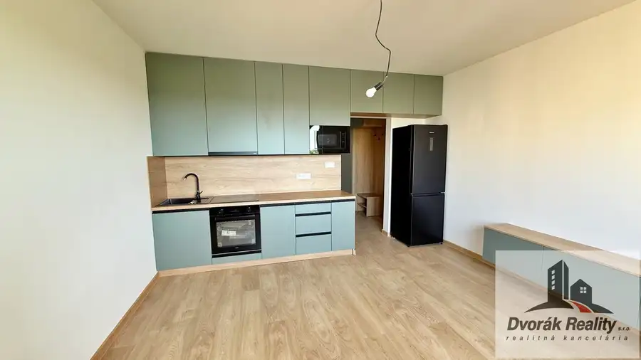
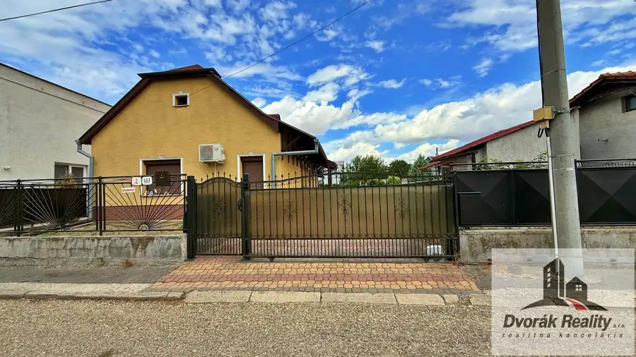
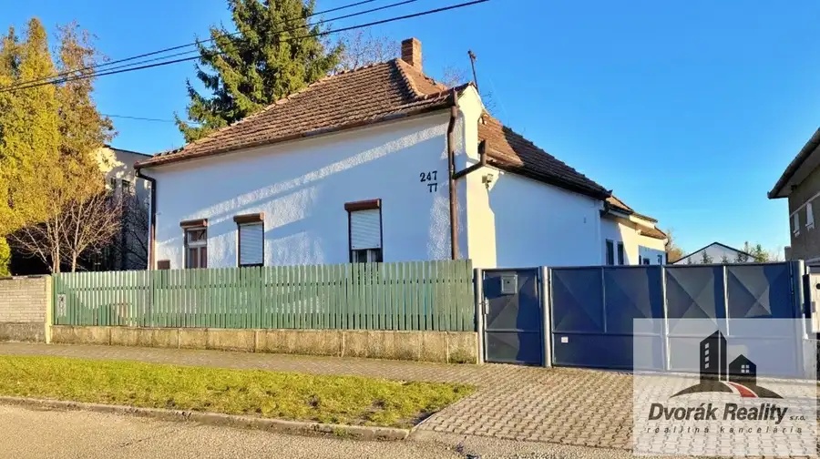

Na predaj 3 izb. byty vo Veľkom Mederi - Harmony Rezidence
Veľký Meder
- Dispozícia3-izbový
- Plocha93 m²
- Poschodie1. z 2
- StavNovostavba
O nehnuteľnosti
Harmony Residence – Veľký Meder (nová štvrť)Live in balance, live in style.Hľadáte moderné, komfortné a úsporné bývanie v tichej lokalite?Predstavujeme vám Harmony Residence – novostavbu 3-izbových bytov v rodinnom dvojdome s dvoma samostatnými bytovými jednotkami v novej, rýchlo sa rozvíjajúcej štvrti mesta Veľký Meder.Stavba je už v realizácii – rezervujte si svoj byt už teraz!Získajte svoje nové bývanie ešte pred dokončením a prispôsobte si ho podľa vlastných predstáv.Dispozícia a výmeryKaždá bytová jednotka ponúka premyslené riešenie s dôrazom na komfort, priestor a súkromie:* 1. nadzemné podlažie (NP): úžitková plocha 81,32 m² (s terasou 93,04 m²)* 2. nadzemné podlažie (NP): úžitková plocha 86,43 m² (s terasou 98,15 m²)Každý byt má vlastný vstup, terasu a parkovacie miesto.Technické informácie* stavebný materiál: tehla 25 cm + 20 cm zateplenie (izolácia)* strecha: škridlová* kúrenie: tepelné čerpadlo – samostatné pre každý byt* okná: plastové, trojsklo* zateplenie a izolácie: kvalitné, energeticky úsporné materiályVýhody projektu Harmony Residence* novostavba v novej, tichej štvrti* moderný dizajn a kvalitné materiály* tepelné čerpadlo – nízke mesačné náklady* možnosť dokončenia podľa vlastných predstáv* vlastná terasa a parkovacie miesto* možnosť rezervácie už teraz* výborná dostupnosť do centra mestaVyhotovenieByty sú dostupné v dvoch variantoch:Holodom – 139.900 €* omietky, potery* 3-násobná maľba v bielej farbeŠtandard – 149.900 € (bez kuchynskej linky)* podlahy (v hodnote 30 €/m²)* dlažby (v hodnote 25 €/m²)* interiérové dvere so zárubňami a kľučkami (250 €/ks)* sanita (v hodnote 1.500 €)Lokalita – Veľký MederVeľký Meder je obľúbené, rozvíjajúce sa mesto známe termálnym kúpaliskom a kvalitnou občianskou vybavenosťou.V blízkosti sa nachádzajú školy, škôlky, obchody, zdravotné stredisko, reštaurácie aj športové zariadenia.Mesto má výborné dopravné napojenie na Dunajskú Stredu, Komárno aj Bratislavu.FinancovaniePomôžeme vám vybaviť hypotekárny úver za najvýhodnejších podmienok na trhu – rýchlo, bez zbytočných starostí a aj vopred, ešte pred dokončením stavby.Naši finanční špecialisti vám pripravia ponuku šitú presne na mieru.Dostupnosť a obhliadky* stavba je vo výstavbe* rezervácia možná už teraz* úver je možné vybaviť aj vopred* predpokladané dokončenie: koniec roka 2026Neváhajte nás kontaktovať a dohodnite si obhliadku – radi vám projekt osobne predstavíme.KontaktTelefón: 0908 535 108E-mail: dvorak.zoltan@dvorak-reality.sk --HUN--Harmony Residence – Nagymegyer (új városrész)Élj egyensúlyban, élj stílusosan.Korszerű, kényelmes és energiatakarékos otthont keres csendes környéken?Bemutatjuk a Harmony Residence projektet – új építésű, 3 szobás lakásokat ikerház jellegű épületben, két különálló lakóegységgel, Nagymegyer új, gyorsan fejlődő városrészében.Az építkezés már folyamatban van – foglalja le lakását már most!Szerezze meg új otthonát még a befejezés előtt, és alakítsa saját elképzelései szerint.Alaprajz és méretekMinden lakóegység átgondolt elrendezéssel készült, a kényelemre, térérzetre és a magánszférára helyezve a hangsúlyt:1.emelet (földszint): hasznos alapterület 81,32 m² (terasszal együtt 93,04 m²)2.emelet (tetőtér): hasznos alapterület 86,43 m² (terasszal együtt 98,15 m²)Minden lakásnak saját bejárata, terasza és parkolóhelye van.Műszaki adatok•Építőanyag: tégla 25 cm + 20 cm hőszigetelés•Tető: cserépfedés•Fűtés: hőszivattyú – minden lakáshoz külön rendszer•Ablakok: műanyag, háromrétegű üvegezéssel•Hőszigetelés és anyaghasználat: minőségi, energiatakarékos megoldásokA Harmony Residence előnyei•Új építésű lakások csendes, új városrészben•Modern dizájn, minőségi anyagok•Hőszivattyús fűtés – alacsony rezsiköltség•Lehetőség egyéni befejezésre•Saját terasz és parkolóhely•Foglalási lehetőség már most•Kiváló közlekedés a városközpontbaKivitelezési szintekSzerkezetkész (Holodom) – 139 900 €•Vakolat, aljzatbeton•3 rétegű fehér falfestésStandard kivitel – 149 900 € (konyhabútor nélkül)•Padlóburkolatok (30 €/m² értékben)•Csempék (25 €/m² értékben)•Beltéri ajtók tokkal és kilinccsel (250 €/db)•Szaniterek (1 500 € értékben)Elhelyezkedés – NagymegyerNagymegyer kedvelt, fejlődő város, híres termálfürdőjéről és kiváló infrastruktúrájáról.A közelben iskolák, óvodák, üzletek, orvosi rendelő, éttermek és sportlétesítmények találhatók.A város közlekedése kiváló – könnyen megközelíthető Dunaszerdahely, Komárom és Pozsony is.FinanszírozásSegítünk a legkedvezőbb feltételekkel elérhető lakáshitel ügyintézésében – gyorsan, egyszerűen, felesleges papírozás nélkül, akár az építkezés befejezése előtt is.Pénzügyi szakértőink személyre szabott ajánlatot készítenek önnek.Elérhetőség és megtekintés•Az építkezés folyamatban van•Foglalás lehetséges már most•Hitel előzetesen is intézhető•Várható befejezés: 2026 év végeKapcsolat:dvorak.zoltan@dvorak-reality.sk0908535108
Parametre
| Cena vrátane energií | Nie |
|---|---|
| Druh | 3 izbový byt |
| Dátum zverejnenia | 13. 11. 2025 |
| Energetický certifikát budovy | nie je |
| Podlažie | 1 |
| Počet nadzemných podlaží | 2 |
| Rok výstavby | 2026 |
| Stav nehnuteľnosti | Novostavba |
| Typ | Predaj |
| Typ konštrukcie | Tehlová |
| Úžitková plocha | 93 m² |
Kde to je


Mohlo by Vás zaujímať

BytNové10 115 000 €Na predaj 3 izb. byt vo Veľkom Mederi na ul. Ružová Veľký Meder 3-izbový60 m²5. podlažie -SK-Na predaj: Nadštandardne zrekonštruovaný 3-izbový byt v obľúbenej lokalite Veľkého MederaPonúkame na predaj kompletne zrekonštruovaný 3-izbový…
DomNové10 135 000 €Na predaj 3 izb. dom vo Veľkom Mederi, ul. Podzáhradná Veľký Meder 86 m² -SK-Ponúkam na predaj 3-izbový rodinný dom vo Veľkom Mederi na Podzáhradnej ulici, situovaný priamo v centre mesta, no zároveň v pokojnej slepej…
DomNové10 199 990 €Na predaj rodinný dom s 5 apartmánmi vo Veľkom Mederi Veľký Meder 200 m² -SK-Ponúkame na predaj kompletne vybavený apartmánový dom nachádzajúci sa vo vyhľadávanej lokalite Veľkého Medera, na Kurtaserskej ulici, len 750…